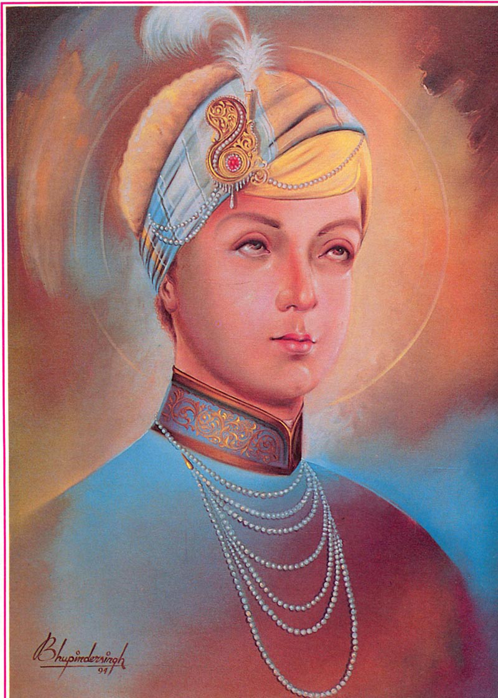

<center><body background="images1/khlihoij.png"width="1000"><TABLE width="1000" BORDER="0" cellpadding="0" cellspacing="0">
<tr><td colspan="2"><center></center>

<tr>
<td>
&nbsp;&nbsp;&nbsp;&nbsp;&nbsp;&nbsp;
<a href="images1/krishan.png" width="1000"> <center> </center>
</td>
<td>
<FONT COLOR="#741111"><FONT SIZE="5">
The Eighth Guru - Guru Har Krishan ji (1661 - 1664)
</font>
<br>
<FONT COLOR="#741111"><FONT SIZE="4">
Name : Guru Har Krishan ji<br>
Parents : Guru Har Rai & Mata Krishen Kaur<br>
Born : July 23, 1656, Kiratpur Sahib<br>
Siblings : Baba Ram Rai<br>
Spouse : --N-A--<br>
Children : --N-A--<br>
Guruship : 1661- 1664<br>
Joti Jot : 16 April 1664<br>
Age :8 years<br>
Bani : --N-A--
<br>
</td>
</tr>

<tr><td colspan="2">&nbsp;&nbsp;&nbsp;&nbsp;&nbsp;&nbsp;

<FONT COLOR="#741111"><FONT SIZE="4">
<br>
Guru Harkrishan Sahib was born on Sawan Vadi 10, (8 Sawan), Bikrami Samvat 1713, (July 7, 1656) at Kiratpur Sahib. He was the second son of Guru Har Rai Sahib and Mata Krishan Kaur Ji (Sulakhni Ji). Ram Rai, the elder brother of Guru Harkrishan Sahib was ex-communicated and disinherited due to his anti-Guru Ghar activities, as stated earlier and Sri Harkrishan Sahib Ji at the age of about five years, was declared as Eighth Nanak Guru by his father Guru Har Rai Sahib before his death in 1661. This act inflamed Ram Rai Ji with jealousy and he complained to the emperor Aurangzeb against his father's decision. The emperor replied in flavor issuing orders through Raja Jai Singh to the young Guru to appear before him. Raja Jai Singh sent his emissary to Kiratpur Sahib to bring the Guru to Delhi. At first the Guru was not willing, but at the repeated requests of his followers and Raja Jai Singh, he agreed to go to Delhi. 

At this occasion, a large number of devotees from every walk of life came to bid him farewell. They followed the Guru Sahib up to village Panjokhara near Ambala. From this place the Guru advised his followers to return to their respective homes. Then Guru Sahib, along with a few of his family members proceeded towards Delhi. But before leaving this place Guru Harkrishan Sahib showed the great powers which were bestowed upon him by the Almighty God. Pandit Lal Chand, a learned scholar of Hindu literature questioned Guru Sahib about the meanings of Gita. Then Guru Sahib called a water-carrier named Chhaju Ram, and with the Guru's grace, this unlettered man was able to expound the philosophy of the Gita. When Pandit Lal Chand listened the scholarly answer from Chhaju, he bent his head in shame and besought the forgiveness of Guru Sahib. Pandit Lal Chand became the Sikh and escorted the Guru Sahib up to Kurukashatra. 

When Guru Sahib reached Delhi, he was greeted with great fervor and full honors by Raja Jai Singh and the Sikhs of Delhi. Guru Sahib was lodged in the palace of Raja Jai Singh. The people from all walks of life flocked the palace to have a glimpse (Darshan) of Guru Harkrishan Sahib. Some chronicles mention that prince Muzzam also paid a visit. 

In order to test the Guru's intelligence, of which everyone spoke very highly, Raja Jai Singh requested the Guru Sahib to identify the real queen out of the equally and well dressed ladies surrounding Guru Sahib. The Guru at once went to a lady dressed as a maidservant and sat in her lap. This lady was the real queen. There are also many different stories we find in some other Sikh accounts relating to Guru Sahib's mental ability. 

Within a short span of time Guru Harkrishan Sahib through his fraternization with the common masses gained more and more adherents in the capital. At the time, a swear epidemic of cholera and smallpox broke out in Delhi. The young Guru began to attend the sufferers irrespective of cast and creed. Particularly, the local Muslim population was much impressed with the purely humanitarian deeds of the Guru Sahib and nicknamed him Bala Pir (child prophet). Even Aurangzeb did not tried to disturb Guru Harkrishan Sahib sensing the tone of the situation but on the other hand never dismissed the claim of Ram Rai also. 

While serving the suffering people from the epidemic day and night, Guru Sahib himself was seized with high fever. The swear attack of smallpox confined him to bed for several days. When his condition became serious, he called his mother and told her that his end was drawing near. When asked to name his successor, he merely exclaimed 'Baba Bakala'. These words were only meant for the future (Guru) Teg Bahadur Sahib, who was residing at village Bakala near river Beas in Punjab province. 

In the last moment Guru Harkrishan Sahib wished that nobody should mourn him after his death and instructed to sing the hyms of Gurbani. Thus the 'Bala Pir' passed away on Chet Sudi 14,(3rd Vaisakh), Bikrami Samvat 1721, (30th March, 1664) slowly reciting the word "Waheguru" till the end. Tenth Nanak, Guru Gobind Singh Sahib paying tribute to Guru Harkrishan Sahib stated in "Var Sri Bhagoti Ji Ki"... "Let us think of the holy Harkrishan, Whose sight dispels all sorrows..."